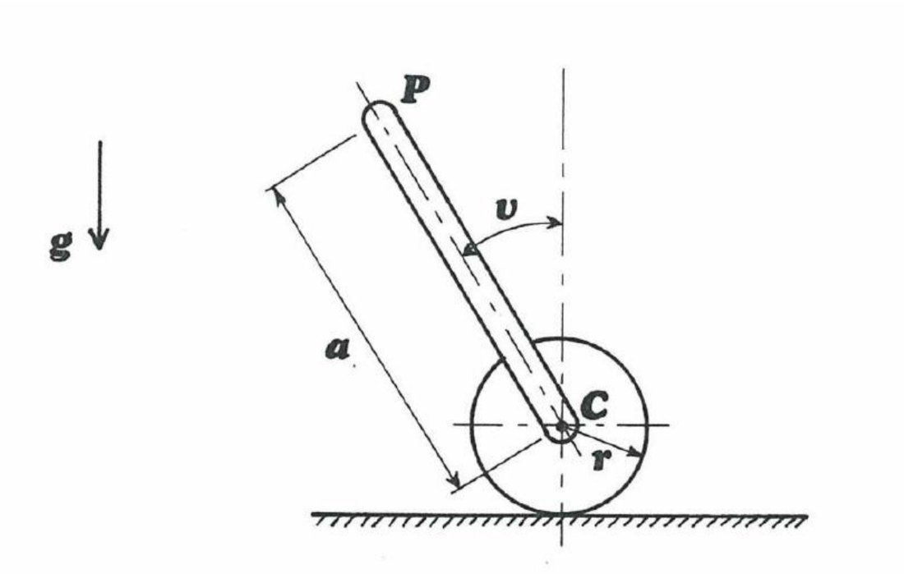

Stangen vælter og skubber cylinderen: hvor meget friktion skal der til, for at den ruller?
OPGAVEN (ROD AND CYLINDER)
En jævn, slank stang ( kg, m) er hængslet frit til en cylinder i ( kg, m). Systemet slippes fra hvile med stangen fra lodret.
Find den mindste statiske friktionskoefficient, så cylinderen ruller uden at glide lige efter slip.
1 · Kinematik, rulning, (16-19)
2 · Cylinderenfriktion og hængselkraft
3 · Stangen(17-6), (17-17): løs
4 · Tjek og Lagrange

→ / mellemrum: næste · ←: forrige · F: fuld skærm · ☰: alle 10 opgaver
TRIN 1 · KINEMATIK
Lige efter slip: alt starter fra hvile
Rulning og relativ acceleration
rulning uden glidning ( mod uret +)
Hibbeler (2023), lign. (16-19) med
Fra hvile. Ingen normalled endnu, kun vinkelaccelerationer
Fra C til stangens midte: 0,5 m langs stangen, 40° fra lodret mod venstre
Stangens vinkelacceleration, mod uret når den vælter mod venstre
1
Geometri
2
Stangens tyngdepunkt
3
UbekendteSeks ubekendte: to accelerationer, hængselkraften i to retninger, friktion og normalkraft
Systemet lige efter slip
Pilene viser løsningen fra trin 3: stangen vælter til venstre, cylinderen ruller til højre
SIGFra hvile er ω nul for begge legemer. Så hænger stangens tyngdepunkt sammen med cylinderens acceleration og stangens α, og intet andet.
TRIN 2 · CYLINDEREN
Friktionen er bundet til cylinderens acceleration
Cylinderen
Hibbeler (2023), lign. (17-6) og (17-17),
Friktion i kontaktpunktet. Den eneste kraft med arm om C, så den alene giver cylinderens α
Hængselkraft fra cylinder på stang. På cylinderen virker
Normalkraft fra underlaget. Bærer cylinder og en del af stangen
4
Moment om C
5
Vandret
6
LodretStangen trykker ned på cylinderen gennem hængslet, så lægges til
Friktionen deler kraften
Af det vandrette skub fra stangen ( N) går 2/3 til at flytte cylinderen og 1/3 til at dreje den. Den tredjedel er friktionen
FRIKTION f−0,420N
NORMAL N12,39N
SIGFor en massiv cylinder er friktionen altid halvdelen af m gange a, bare med modsat fortegn. Det gør tre af de seks ligninger simple.
TRIN 3 · STANGEN
Stangen lukker ligningssystemet
Stangen i generel plan bevægelse
Hibbeler (2023), lign. (17-6) og (17-17),
Hængselkraften i stangens nederste ende
Tyngden i G, 3,92 N. Den eneste kraft, der får stangen til at vælte
Arm for hængselkraften om G:
7
Stangens tre ligninger
8
Løs med trin 2 (6 × 6)
9
Mindste friktionskoefficient
μmin afhænger af startvinklen
v
μMIN0,034
αs10,42rad/s²
SIGMed cylinderens tre ligninger og stangens tre har jeg seks ligninger til seks ubekendte. μmin er friktionen delt med normalkraften.
TRIN 4 · SVAR OG TJEK
Er resultatet rimeligt?
lige efter slip
✓
Normalkraften passer
Hele systemet vejer N. Stangens G falder med m/s², så gulvet skal bære N mindre: N ✓
✓
Uafhængigt tjek med Lagrange
Koordinaterne og vinklen giver en 2 × 2 massematrix. Samme og til alle cifre ✓
✓
Retninger
Stangen vælter mod venstre og skubber hængslet mod højre. Cylinderen ruller til højre, og friktionen peger mod venstre for at få den til at dreje ✓
Hvad nu hvis …
Stangens masse
Startvinkel v
μMIN0,034
aC0,841m/s²
αs10,42rad/s²
μmin mod stangens masse · stiplet = opgavens
En tungere stang skubber hårdere til cylinderen og kræver mere friktion
SIGNormalkraften er mindre end den samlede vægt, fordi stangen er på vej ned. Svaret er lille, fordi stangen er let i forhold til cylinderen.